Hungarian method
Referenced from https:www.cse.ust.hk golinCOMP572NotesMatching.pdf
- bipartite
A graph is bipartite if 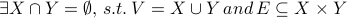
- matching
A matching is 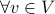, atmost one edge in corresponding with
- maximum matching
Maximum matching is a problem as 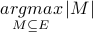
- maximum weighted matching
Define weight 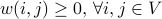. Maximum weighted matching is to solve 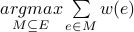 (can assume
 complete graph, by zero-padding weight)
complete graph, by zero-padding weight)
- matched and free
Vertex is matched if , is a point of . Otherwise call as free
- alternating path
Alternating path is edges head-by-tail linked and alternative between and
- augmented
An alternating path is augmented if both endpoints are free
- alternating tree
An alternating tree is a tree rooted at some free points, where every path from it is an alternating path
- perfect matching
An perfect matching is an including every vertex in

- labelling
A labelling is a function 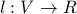
- feasible labelling
A feasible labelling satisfies 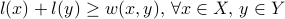
- equality graph(w.r.t.
 )
) An equality graph is 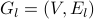 where 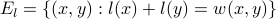
Theorem: If feasible and perfect in 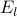, then is a max-weight matching
Proof: For any matching, always can find a perfect matching as its upper bound. For any perfect matching , we have
Therefore 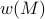 is an upper bound for all perfect matchings 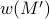, hence is a max-weight matching
Then we have an simple algorithm
Algorithm:
initial
and 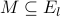 by setting 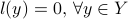 and 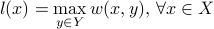while not perfect:
find augmenting path for to increase
if no augmenting path, improve
to 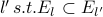
- neighbour(w.r.t )
An neighbour of vertex is 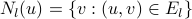. An neighbour of set is 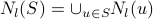
Lemma: Let 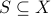 and 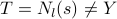. Set 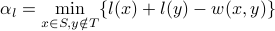 (like in ECE272 Convex Optimization, doesn't it?). And define the update rule as:
Then is a feasible labelling and
If 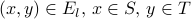, then

If 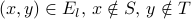, then
There is some edge 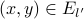 for 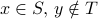
Hungarian Method:
Generate initial labelling
and matching Considering :
If perfect, stop (according to theorem, we find the solution)
Otherwise, pick free vertex 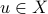 and set 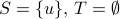
If 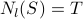, update labels(to make N_l(S)>T) by update rule
IF 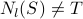 (actually 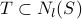), pick 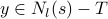
If
 free, 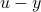 is augmenting path. Augment and goto 2
free, 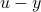 is augmenting path. Augment and goto 2If
matched, say to  , then extend alternating tree: 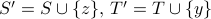 and goto 3
, then extend alternating tree: 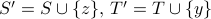 and goto 3
Comment
S和T相当于找可增广交替链的过程，和朴素的最大二分匹配差不多（只不过这里我们要找更强的完全匹配），只不过多了一步更新规则
从定理我们知道只需要在等式图里找一个完全匹配，这样的思路使得我们在匹配边时不用考虑权重（等式图本身就是权重的自洽，这里面的边我们可以任意使用），而当找不到匹配时才需要通过更新规则引入新的合法边纳入等式图
一条可增广交替链必须是两端都是自由的，中间是匹配边和非匹配边交替
首先找到一个自由点作为S端的引入，T是已观察到被匹配的点集： 如果，说明S没有可探的路径了，需要步骤3更新规则来纳入新的合法边（增大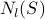），找到新的可探路径（我们要找完全匹配，当然不能就在这里停下来）；如果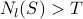，那么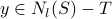就是一条可探路径的末端，把y加入到T中：然后如果y是自由点（相当于加一条非匹配边），那就相当于找到了一条可增广交替链的两端，进行增广；如果y是匹配点，找到和它匹配的另一端z然后加到S中（相当于加一条非匹配边再加一条匹配边），然后继续在合法的等式图里试探。
我猜，顶点的标号和边的权重是对偶的；每一次都是在对偶问题的可行解（标号和权重的约束关系）找使得原问题约束成立（完全匹配）的解，对偶问题里的每一个解（所有端点的标签和）都应该是比原问题里的解（完全匹配边权和）要大的（标号权重规则），更深层的就理解不能了。
Complexity
每次增广使得匹配点数至少加一，一共个点，所以最外层套个。每次增广的过程要遍历所有的边一次，所以内层是，所以总共是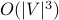